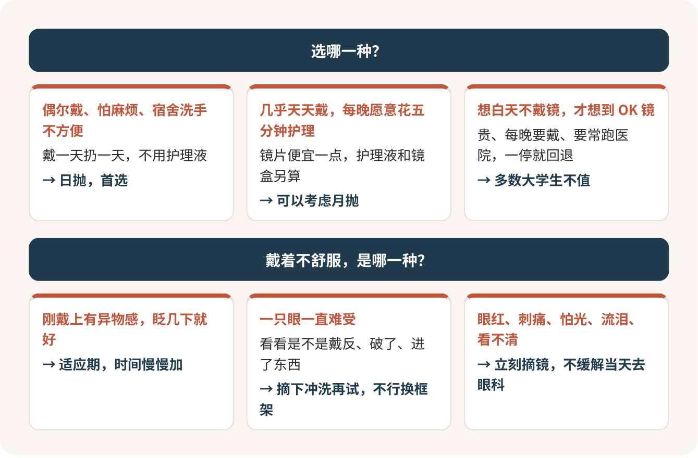

隐形眼镜：日抛最省心，OK镜多半不是给你的
第一次戴隐形眼镜，我只推荐日抛：戴一天扔一天，不用护理液，不用刷镜盒，宿舍条件再一般也出不了大错。月抛看着便宜，省下的那点钱要用每天晚上的耐心来换。至于 OK 镜，诊室里戴它的多半是中小学生，家长图的是给孩子控制度数；你已经是大学生了，这笔钱别轻易花。
它是医疗器械，别当美妆小物买
隐形眼镜在我国按第三类医疗器械管，是管得最严的那一档，美瞳也一样。很多人第一次戴，是跟着室友在网上随手下单的，度数照着框架眼镜填，基弧直径照着“通用款”选，这是最容易犯的错。
隐形眼镜是直接贴在眼球上的，度数和框架眼镜不一定相同，度数高的要换算；你的眼球弧度跟别人也不一样。所以第一次，去医院视光科或者正规的验配机构做一次验配。检查不疼，就是测一下角膜弧度，用裂隙灯看看眼表，再给你试戴一副，看镜片在眼睛上待得稳不稳。费用也就几十块。
我第一次戴隐形眼镜，麻烦帮我做一下验配和试戴，把隐形眼镜的度数、基弧和直径写给我。
拿到这三个数，以后在网上买才有底。
第一次往眼睛里塞东西，手抖是正常的
第一次自己戴的时候，十个人里有八个会对着镜子折腾十几分钟，镜片粘在手指上，眼皮一直眨，眼泪哗哗地流，戴上了还觉得眼睛里有东西。别慌，这一关谁都要过。
几个能让你少折腾的办法：手洗干净、擦干，指甲剪短；镜片放在食指指尖，先看看是不是翻了，正面像个小碗，反面边缘会往外翻；另一只手把上眼皮往上拉住，眼睛往上看，镜片轻轻放上去就松手。在验配那天让验配师手把手教你一次，学会了再走，这比你回宿舍自己看视频强得多。
头几天有点异物感、看东西稍微有点糊，算正常的适应期。时间从短开始加，第一天戴四五个小时就摘，一周内慢慢加到全天。持续的疼不算适应，那是有问题。
日抛还是月抛：我选日抛
这一题我直接给答案：大学生选日抛。
日抛的好处就一个字，省心。早上戴，晚上扔，不需要护理液，不需要镜盒，不用担心哪天忘了换药水。宿舍公共洗手台、熬夜赶作业、出去玩一整天，这些场景对日抛都不是事。而且镜片每天都是新的，表面没有攒下的蛋白和脏东西，眼睛也更舒服。
月抛摘下来每天都要搓洗、冲洗、泡在新鲜护理液里，镜盒还要定期换。它像自己做饭，确实比外卖省钱，可锅碗得天天刷，哪天偷懒，后果落在眼睛上。几乎天天戴、又确定自己每晚愿意花五分钟护理的人，可以考虑。
钱的账很简单。一盒三十片的日抛只够两只眼睛戴十五天，这一点很多人买的时候没反应过来。天天戴，一个月一两百块；只在周末、上体育课、拍照的时候戴，一个月几十块就够了。很多大学生是框架眼镜为主、隐形眼镜为辅，这种戴法日抛最划算。
第一次别囤货。戴得住、眼睛也没意见，再趁活动多买几盒。

每天的规矩，就这几条
戴之前洗手擦干。先戴镜片再化妆，卸妆前先摘镜片。
永远别用自来水、自己兑的盐水或者口水冲镜片，也别戴着游泳、洗澡。
不能戴着睡觉。这一条我说得最狠：戴任何隐形眼镜睡觉，都会让严重感染的风险大大增加。期末周趴在桌上眯一会儿，也算睡觉。困了，先摘。
包里常备一副框架眼镜。眼睛一不舒服，马上就能换下来，不用硬撑到回宿舍。
眼睛红了，当天就去医院
刚戴上有点异物感、眨几下就好，属于适应。一只眼一直特别难受，先摘下来看看是不是戴反了、镜片破了、进了东西，冲一冲再试，还不行就换框架。
眼红、刺痛、怕光、流泪、看不清，这五样出现任何一样：立刻摘镜，今天别再戴；摘了还不缓解，当天去医院眼科。把镜片、镜盒和护理液一起带上，医生更好判断是不是感染。
我戴隐形眼镜以后右眼红、怕光、刺痛，已经摘了还没好，镜片和护理液我都带来了。
这一条别拖到明天，角膜感染是会伤视力的。
美瞳：只在正规店买
美瞳没有度数也一样是医疗器械，规矩跟隐形眼镜一样，而且它直径大、着色区大，透气更差，第一次戴也先去验配。买的时候只认有医疗器械经营许可的店，商品页能找到“国械注准”或“国械注进”开头的注册证编号，没有的直接划走。几十块一大包、没有任何编号的那种，是拿眼睛开玩笑。
这款美瞳的医疗器械注册证编号是多少？
OK 镜：多半不是给你准备的
OK 镜的全名叫角膜塑形镜，是一种晚上戴着睡觉的硬镜片，睡一夜把角膜中央轻轻压平一点，第二天摘了也能看清。听起来很神奇，可要紧的是“暂时”两个字。就像宿舍枕头压了一夜留下的褶子，白天还在，放几天就鼓回去了，一停戴，度数就回来。
所以它在门诊里最主要的用户，是还在长身体、度数还在涨的孩子，家长想的是给孩子控制近视的速度。到了大学，大多数人的度数已经慢慢稳定了，你图的只是“白天不戴镜”。为了这一点，你要付出的代价是：
一笔不小的钱。光是医院买镜片的价格就要三千块左右一片，你付的只会更多，两只眼睛加上检查、复查、护理液，大几千起步，镜片一两年还得换。
每天晚上都得戴，而且得睡够。期末周通宵、假期回家作息一乱，效果就打折。
每隔几个月跑一趟医院复查，刚开始那一个月要去好几次。
如果你两三年内想做近视手术，手术前还得停戴三个月以上，这三个月戴框架过渡，等于白花了一大笔钱。
我的判断：大学生配 OK 镜，多数情况下不值。真想白天不戴镜，日抛隐形眼镜便宜得多、轻松得多；想一劳永逸，等度数稳定了去看近视手术那一篇。如果你确实有特殊原因非它不可，记住它只能在有资质的医院配，正规的检查要做一大串，眼镜店里随手就能配的，别碰。
框架眼镜还是要备一副，怎么配见配眼镜那一篇。
验配那天多要一两副试戴片带回去，在宿舍戴一个周末，眼睛说行了，再下单。